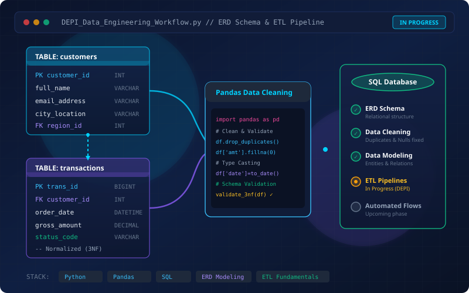

Ongoing Project
DEPI Data Engineering Team Project
A collaborative Data Engineering project developed as part of the Digital Egypt Pioneers Initiative. The project focuses on organizing data and building the foundations of a structured data workflow using database design, data cleaning, data modeling, and ETL concepts.
Technologies & Concepts
Python
Pandas
SQL
Database Technologies
Entity-Relationship Diagrams (ERDs)
Data Cleaning
Data Modeling
ETL Fundamentals
My Role & Contributions
- Designed the database structure and relational entities.
- Created the comprehensive Entity-Relationship Diagram (ERD).
- Worked on data cleaning, missing value handling, and organization.
- Contributed to defining relationships and foreign keys between database entities.
- Supported the development of a consistent data model.
Current Progress Status
Database Design, ERD Design, and Data Cleaning have been implemented. ETL, Data Pipelines, and additional Python/Pandas integration are currently in progress.